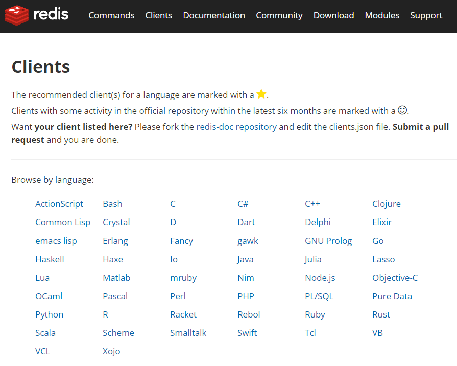
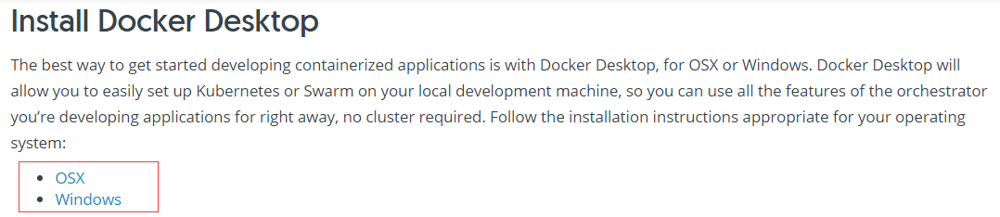
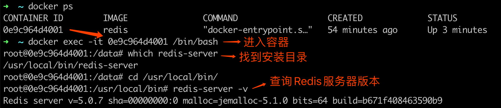
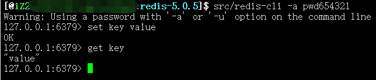

- 01 Redis 是如何执行的.md
- 02 Redis 快速搭建与使用.md
- 03 Redis 持久化——RDB.md
- 04 Redis 持久化——AOF.md
- 05 Redis 持久化——混合持久化.md
- 06 字符串使用与内部实现原理.md
- 07 附录：更多字符串操作命令.md
- 08 字典使用与内部实现原理.md
- 09 附录：更多字典操作命令.md
- 10 列表使用与内部实现原理.md
- 11 附录：更多列表操作命令.md
- 12 集合使用与内部实现原理.md
- 13 附录：更多集合操作命令.md
- 14 有序集合使用与内部实现原理.md
- 15 附录：更多有序集合操作命令.md
- 16 Redis 事务深入解析.md
- 17 Redis 键值过期操作.md
- 18 Redis 过期策略与源码分析.md
- 19 Redis 管道技术——Pipeline.md
- 20 查询附近的人——GEO.md
- 21 游标迭代器（过滤器）——Scan.md
- 22 优秀的基数统计算法——HyperLogLog.md
- 23 内存淘汰机制与算法.md
- 24 消息队列——发布订阅模式.md
- 25 消息队列的其他实现方式.md
- 26 消息队列终极解决方案——Stream（上）.md
- 27 消息队列终极解决方案——Stream（下）.md
- 28 实战：分布式锁详解与代码.md
- 29 实战：布隆过滤器安装与使用及原理分析.md
- 30 完整案例：实现延迟队列的两种方法.md
- 31 实战：定时任务案例.md
- 32 实战：RediSearch 高性能的全文搜索引擎.md
- 33 实战：Redis 性能测试.md
- 34 实战：Redis 慢查询.md
- 35 实战：Redis 性能优化方案.md
- 36 实战：Redis 主从同步.md
- 37 实战：Redis哨兵模式（上）.md
- 38 实战：Redis 哨兵模式（下）.md
- 39 实战：Redis 集群模式（上）.md
- 40 实战：Redis 集群模式（下）.md
- 41 案例：Redis 问题汇总和相关解决方案.md
- 42 技能学习指南.md
- 43 加餐：Redis 的可视化管理工具.md
02 Redis 快速搭建与使用
Redis 是由 C 语言开发的开源内存数据存储器，经常被用作数据库、缓存以及消息队列等。 Redis 因为其强大的功能和简洁的设计，深受广大开发者和公司的喜爱，几乎占领了内存数据库市场的所有份额。
1 Redis 特性
Redis 有很多优秀的特性，这也是它最受欢迎的原因。
1）多种数据类型支持
Redis 支持多种数据类型，例如字符串、散列、列表、集合、有序集合、HyperLogLog、流、地理坐标等，每种类型都有对应的使用场景，同时也满足了所有开发者的需要。
2）功能完善
Redis 提供了很多的功能，例如消息队列、自动过期删除、事务、数据持久化、分布式锁、附近的人、慢查询分析、Sentinel 和集群等多项功能。
3）高性能
Redis 是一款内存型数据库，因此在性能方面有天生的优势(内存操作比磁盘操作要快很多)，并且 Redis 在底层使用了更加高效的算法和数据结构，以最大限度的提高了 Redis 的性能。
4）广泛的编程语言支持
Redis 客户端有众多的开发者提供了相应的支持，这些客户端可以在 https://redis.io/clients 上找到，支持是编程语言，如下图所示：  可以看出几乎所有的编程语言，都有相应的客户端支持。
5）使用简单
Redis 的 API 虽然比较丰富，但操作的方法都非常的简便，并且需要传递的参数也不多，这样开发者就能更快的上手使用，而且 Redis 官方也提供了比较完整的说明文档。
6）活跃性高/版本迭代快
Redis 活跃度很高，这点可以在 Redis 的开源项目 https://github.com/antirez/redis 中发现，并且 Redis 的版本迭代也很快，到目前为止 Redis 的发布版本就已经有二百多个了。
7）I/O 多路复用模型
Redis 使用了多路 I/O 复用模型，“多路”指的是多个网络连接，“复用”指的是复用同一个线程，采用多路 I/O 复用技术可以让单个线程高效的处理多个连接请求，这样就减少了创建和销毁线程所带来的时间消耗，从而到达高效处理大量并发请求的目的。
2 Redis 发展历程
Redis 的发展大概经过了以下几个过程：
- 2009 年 5 月发布 Redis 初始版本；
- 2012 年发布 Redis 2.6，重构了大量的核心代码，去掉了所有和集群相关的代码；
- 2013 年 11 月发布 Redis 2.8，增加了部分主从复制功能；
- 2015 年 4 月发布 Redis 3.0，增加了集群功能；
- 2017 年 7 月发布 Redis 4.0 ，优化了复制功能和新增了混合持久化；
- 2018 年 10 月发布 Redis 5.0，增加了 Stream 数据类型；
- 2020 年 3-5 月计划发布 Redis 6.0 稳定版。
3 Redis 安装
Redis 官方提供了 Linux 和 MacOS 服务端安装包，对于 Windows 还有提供正式的支持，之所以不支持 Windows 平台是因为目前 Linux 版本已经很稳定，并且也有大量的用户，如果开发 Windows 版本可能会带来很多的兼容性问题，但 Windows 平台还是有很多种方法可以安装 Redis 的，本文的下半部分会说到，我们先来看 Redis 在 Linux 和 MacOS 平台的安装。
1）源码安装
① 下载源码包
进入网址：https://redis.io/download 选择需要安装的版本，点击 Download 按钮，如下图所示： 
② 解压安装包
使用命令：tar zxvf redis-5.0.7.tar.gz
③ 切换到 Redis 目录
使用命令：cd /usr/local/redis-5.0.7/
④ 编译安装
使用命令：sudo make install 安装完成，如下图所示：  如果没有异常信息输出，向上图所示，则表示 Redis 已经安装成功。
如果没有异常信息输出，向上图所示，则表示 Redis 已经安装成功。
2）Docker 安装
Docker 的使用前提是必须先有 Docker，如果本机没有安装 Docker，对于 Linux 用户来说，可使用命令 yum -y install docker 在线安装 docker，如果是非 Linux 平台需要在官网下载并安装 Docker Desker，下载地址：https://docs.docker.com/get-started/ 如下图所示：  选择相应的平台，下载安装即可。 有了 Docker 之后，就可以在 Docker 上安装 Redis 服务端了，具体步骤如下：
① 拉取 Reids 镜像
使用命令：
docker pull redis
如果要安装其他版本的 Redis，可使用 docker pull redis:版本号 的方式来安装。
② 运行 Redis 容器
使用命令：
docker run --name myredis -d -p 6379:6379 redis
其中：
- --name：设置别名
- -p：映射宿主端口到容器端口
- -d：表示后台运行
执行完成后截图如下：  如图所示，则证明 Redis 已经正常启动了。 如果要查询 Redis 的安装版本，可遵循下图的执行流程，先进入容器，在进入 Redis 的安装目录，执行
如图所示，则证明 Redis 已经正常启动了。 如果要查询 Redis 的安装版本，可遵循下图的执行流程，先进入容器，在进入 Redis 的安装目录，执行 redis-server -v 命令，如图如下： 
③ 执行命令
Docker 版的 Redis 命令执行和其他方式安装的 Redis 不太一样，所以这里需要单独讲一下，我们要使用 redis-cli 工具，需要执行以下命令：
docker exec -it myredis redis-cli
其中“myredis”指的是容器中 Redis 服务端的别名。
3）在线安装
在线安装的执行步骤最简单，只需要执行 xxx install redis 命令即可直接安装，例如 MacOS 使用 brew install redis 、Ubuntu 使用 apt-get install redis 、CentOS 使用 yum install redis 等。
3 Windows 系统安装 Redis
上面我们提到了，官方并没有提供 Windows 的支持版本，但 Windows 平台依旧有很多种方法，可以用来安装 Redis 服务端，例如 Docker 方式、虚拟机方式、Windows 10 子系统方式和第三方提供的 Redis 版本等。
其中 Docker 方式和本文上半部分介绍的安装方式相同，这里就不再赘述，当然你也可以使用虚拟机安装 Linux 的方式，或者是使用 Windows 10 下的自带的 Linux 子系统的方式进行安装。
如果你还想要更简单的方式，就可以使用第三方提供的 Redis 安装包进行安装，例如可以使用微软官方支持并维护的一个 Win64 的 Redis 开源项目，目前支持的最新版本为 3.2，项目地址：https://github.com/MicrosoftArchive/redis/releases 下载 .msi 和 .zip 文件安装即可。
4 Redis 使用
Redis 安装完之后，在 src 目录和 /usr/local/bin 目录下有几个很重要的可执行文件，这些可执行文件可以做很多事，如下表所示：
| 可执行文件 | 功能 |
|---|---|
| redis-server | 启动 Redis |
| redis-cli | Redis 命令行工具 |
| redis-benchmark | 基准测试工具 |
| redis-check-aof | AOF 持久化文件检测工具和修复工具 |
| redis-check-dump | RDB 持久化文件检测工具和修复工具 |
| redis-sentinel | 启动 redis-sentinel |
1）启动 Redis
下面我们就用可执行文件 redis-server 来启动 Redis 服务器，我们在 Redis 的安装目录执行 src/redis-server 命令就可以启动 Redis 服务了，如下图所示：  可以看出 Redis 已经正常启动了，但这种启动方式，会使得 Redis 服务随着控制台的关闭而退出，因为 Redis 服务默认是非后台启动的，我们需要修改配置文件(redis.conf)，找到
可以看出 Redis 已经正常启动了，但这种启动方式，会使得 Redis 服务随着控制台的关闭而退出，因为 Redis 服务默认是非后台启动的，我们需要修改配置文件(redis.conf)，找到 daemonize no 改为 daemonize yes ，然后重启服务，此时 Redis 就是以后台运行方式启动了，并且不会随着控制台的关闭而退出。
daemonize 配置如下： 
2）使用可视化工具操作 Redis
Redis 启动之后就可以使用一些客户端工具进行链接和操作，如下图所示：  (注：我们本文使用的是 Redis Desktop Manager 工具链接的，更多 Redis 可视化工具，在本课程的后面有介绍。) 可以看出 Redis 服务器默认有 16 个数据库实例，从 db0 到 db15，但这个数据库实例和传统的关系型数据库实例是不一样的。传统型数据库实例是通过连接字符串配置的，而 Redis 数据库连接字符串只有一个，并不能指定要使用的数据库实例。
(注：我们本文使用的是 Redis Desktop Manager 工具链接的，更多 Redis 可视化工具，在本课程的后面有介绍。) 可以看出 Redis 服务器默认有 16 个数据库实例，从 db0 到 db15，但这个数据库实例和传统的关系型数据库实例是不一样的。传统型数据库实例是通过连接字符串配置的，而 Redis 数据库连接字符串只有一个，并不能指定要使用的数据库实例。
在 Redis 中如果要切换数据库实例，只需要执行 select n 命令即可，例如需要连接 db1 ，使用 select 1 命令选择即可，默认连接的数据库实例是 db0。
小贴士：当使用了
flushall清空 Redis 数据库时，此数据库下的所有数据都会被清除。
Redis 数据库的实例个数也可以通过配置文件更改，在 redis.conf 中找到 databases 16 ，修改后面的数字重启 Redis 服务就会生效。
3）使用 redis-cli 操作 Redis
redis-cli 是官方自带的客户端链接工具，它可以配合命令行来对 Redis 进行操作，在 Redis 的安装目录使用 src/redis-cli 命令即可链接并操作 Redis，如下图所示： 
5 小结
本文介绍了 Redis 的特性及其发展历程，以及 Redis 在 Windows、Linux、MacOS 下的安装，其中 Docker 安装方式，对所有平台都是通用的，在 Linux、MacOS 平台下可以在线安装或者使用源码安装，Windows 平台可以使用虚拟机或子系统以及第三方提供的 Redis 安装包进行安装。安装成功之后可以使用 redis-server 来启动 Redis 服务，并使用 redis-cli 来链接和操作 Redis 服务器，redis-server 默认是非后台运行 Redis，需要修改配置 daemonize yes 来设置 Redis 为后台运行模式，这样就可以快速上手使用 Redis 了。